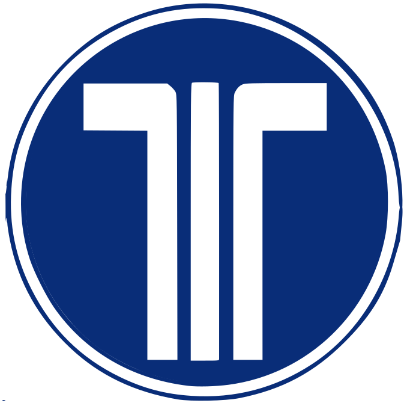

Anexo:Señales de tráfico de reglamentación de España

 R-418. Vía exclusiva para vehículos dotados de equipo de telepeaje operativo: Telepeaje obligatorio. Obligación de efectuar el pago del peaje mediante el sistema de peaje dinámico o telepeaje; deberá estar provisto el vehículo que circule por el carril o carriles así señalizados del medio técnico que posibilite su uso en condiciones operativas de acuerdo con las disposiciones legales en la materia.
Referencia: Wikipedia
Anexo:Señales de tráfico de reglamentación de España